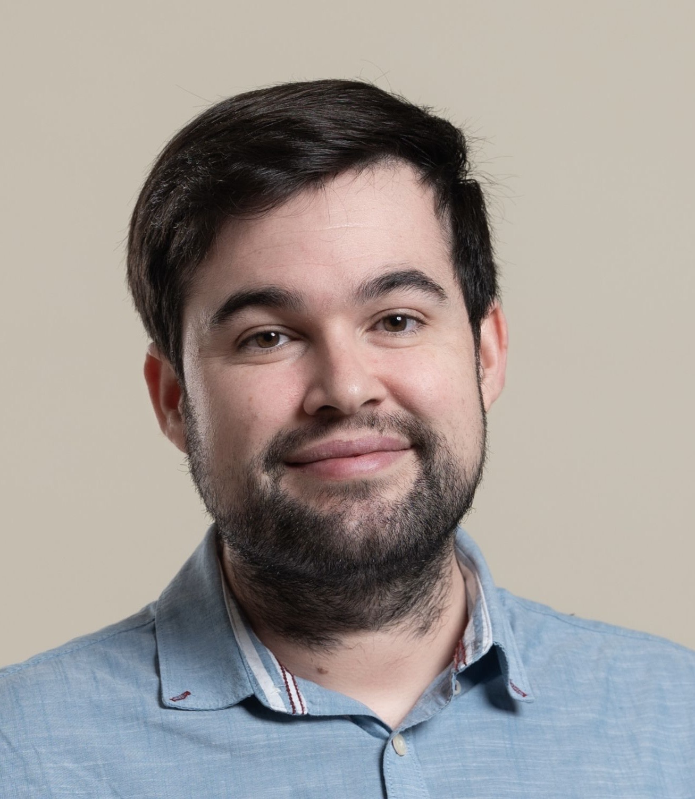

Specialist in the interaction between functional analysis and approximation theory. My research focuses on greedy algorithms and their mathematical foundations, with over 30 publications in international journals. I also hold leadership roles at CUNEF and the Royal Spanish Mathematical Society (RSME).
Study of thresholding greedy algorithms, Lebesgue-type inequalities, and optimality conditions for bases in Banach and quasi-Banach spaces.
Geometry of Banach spaces, democratic and bidemocratic bases, quasi-greedy bases, and their structural properties in sequence spaces.
Mathematical underpinnings of sparse learning, step-size decay in greedy methods, and connections to deep learning and tensor representations.
Best m-term approximation, approximation spaces, and their relations with Lorentz spaces and interpolation theory.
Emerging connections between Topological Data Analysis and greedy algorithms as a new research direction.
Nonlocal diffusion equations with dynamical boundary conditions, and universality results for non-linear convex variational problems.
Feel free to reach out for research collaborations, seminar invitations, or questions about mathematics.